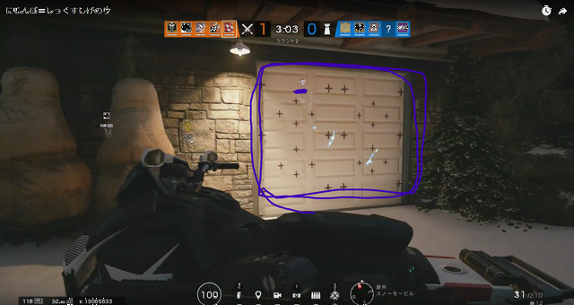

ページ内リンク
このサイトは，私のFPSゲーム「Tom Clancy's Rainbow Six Siege(通称:虹六/R6S）」への愛を皆 さんへ伝えること， 皆さんが虹六をプレイする際の参考サイトにしていただくこと. この二つの点を目的に作成しました． とくに，注意点にはゲームをする上で役に立ちそうなことを書きました． …（以下2019/10/16追記） そんなことはもう昔の話、今僕は虹六なんてやっていません。なんだこのクソゲーは…。つまらん。やめてしまえ にじろくのここがすごい！！ 「敵を倒しても楽しくない」 なんだこれ。受験期の虹六したい欲はいったい何だったのか…。 皆さん,競技プログラミングをしましょう。競技プログラミングはいいいぞ！！競技プログラミングはいいぞ～～！！！
本サイトでは，PC版虹六のカジュアルマッチについて話していきます．そのほかのモードについてはやりたきゃやってろください(楽しいよ)
虹六を愛し，そして虹六を愛したあなたを私に愛させてください．
こんなのは出鱈目だ。AtCoderを愛せ
簡単に言うと虹六はFPSです． 試合は5対5の攻撃陣営と防衛陣営に分かれて行います． 前者がミッション成功を目指し後者はミッション遂行を阻止します． ミッションには「爆弾の解除」，「人質の救出」，「エリアの確保」の３つがあります． 本サイトでは，爆弾，人質の置かれている部屋，確保すべき部屋のことを単にエリアと表記する．
プレイヤーは1人１オペレータを選択し，それぞれの固有アビリティを用いて味方と協力してミッション遂行を目指します． 時間内にミッションが達成されると攻撃陣営の勝ち，また，敵陣営を全滅させることでも勝敗が決まります． 試合は準備フェーズ45秒と戦闘フェーズ3分30秒からなります（延長あり）.
余談ですが，Tom Clancy's Rainbow Six Siegeというゲームタイトルは，Tom Clancy（トム・クランシー） が書いた小説，Rainbow Six に由来します． Rainbow Sixとは，『レインボー』という特殊部隊の『指揮官』という意味です． レインボーという特殊部隊の6人，という意味ではないのですが，よくR6Sと略されます．
ここまでの説明では，虹六というゲームがどういうものなのか，なぜ面白いのか
というのがあまり伝わらなかったと思います．
そこで，虹六ならではの特徴をお話します．
全オペレータを細かく紹介すると相当な文量になってしまうため，似ている役割ごとにオペレータを分類してみました．
画像の名前に青線がついているのは基本オペレータで，虹六がリリースされたときから出ているオペレータです．
ちなみにこの画像作るの結構大変だったんだよ！！
そのほかのオペレータは虹六リリース後に追加されたオペレータで，year系オペレータと僕は勝手に呼んでいます．
虹六のオペレータは1年に8体追加されます．
year系オペレータを獲得するためには基本オペレータを獲得する2倍の手間がかかります．いっぱいプレイして，全オペレータ入手しようね！
(基本オペレータを1体獲得するためには40試合程度する必要があります．たいへんだね～)
R6Sを楽しむには少しコツがいります．
会話をすると楽しいですよ．
実は日本人のプレイヤーが結構いるので，何を話しても割と話に付き合ってくれます．
辛いときや寂しいとき，友達に話せないようなこともありますよね．
そんなときは虹六でチャットをしましょう．きっと相槌をうってくれるはずです．
ただ，暴言はやめましょう．平和に仲良く楽しんでください．
待ち時間の過ごし方について少しアドバイスです．
オペレータ選択を行ってから試合開始まで，ロード時間が長い人がいたり，自分のロードがなかなか終わらないとき，
せかしてくる人がいますが，どうしようもないので無視しましょう．
申し訳ないなって気持ちのがあるならば，「sorry.Let`s play SIRITORI」と言って，しりとりでもすればいいと思います．
僕はしたことないけど．
チャットは何でも話せる素敵な場です．ぜひ積極的に活用してください．
チーム内チャット（同一陣営のメンバーにチャットを送る）を送るときはYキー,
全員にチャットを送るときはTキーを押すと文字入力ができるようになります．
ただ，チャットを楽しみすぎていざというときにチャットを閉じ忘れて動けない！なんてことが無いように気を付けてください.
オペレータの経歴を眺めると，オペレータの年齢や本名，生い立ちなどが分かります．(ただ性別は書いてなくて，見た目で判別できなオペレータもいるんですよね)
虹六のオペレータは実在する組織の実在する人物をモデルに作られています．
例えば，エコー（D）の本名は江夏 優で,経歴は以下のようになっています．
技術系企業やアニメスタジオが多数存在する、杉並の町で幼少期を過ごす。 16才の時点でロボット工学に触れており、厳しい環境下での捜索救助が可能な自律性の飛行型ロボットを開発。その2年後には国際空中ロボットコンテスト（IARC）で優勝を果たしたことで、その名を知られるようになる。 首都大学東京理工学部での実績が警備局の目にとまり、自らの発明品を現場で試したいと考えた江夏は警察大学校に入学する。1年後には警視庁特殊部隊に入隊し、その後は愛知県警察特殊部隊に移った。 (レインボーシックスシージ 公式ページより引用)
エコーは愛知県警所属なんですよ．とても身近ですね．驚きませんか？驚きますよね．えぇ，僕も驚きました．
このようなキャラクターの経歴は，ゲームを起動してからも見れますし，虹六の公式サイト
からも閲覧することができます．
面白いです．見ましょう．いや，見ろ．
ここまでの内容を踏まえて，虹六の試合の流れを見ていきましょう．
所持していないオペレータは使えません．所持しているオペレータの中から
使いたいオペレータを選択しましょう．
ほかのプレイヤーと同じオペレータは選択できません．
もしも所持オペレータがすべて取られてしまった場合や，
何も選択しない場合は新兵で戦うことになります．
新兵は固有アビリティを何も持っていませんが，武器やガジェットの選択の幅が広いです．
オペレータを選択したら，戦場に持っていくガジェットや，武器につけるアタッチメントを変えれます．
攻撃陣営はドローンを使ってエリアを発見
，防衛陣営のオペレータの特定を行います．
建物内にドローンを隠しておいて，監視カメラとして使うのもいいでしょう．
ドローンが敵をスキャンしようとすると，ドローンは赤く光って見つかりやすくなるので，味方のドローンでむやみやたらにスキャンをすると嫌がられることもあります．
ドローン操作中に見つけた罠の位置は当然覚えておくべきです．
エリア周辺の壁を補強したり，有刺鉄線を置いたり罠を仕掛けるなどして，敵がエリアに容易に近づけないようにします．
壁の補強を行っているときの画像です．
いわゆる自由時間です．楽しみましょう．
攻撃陣営は建物の外から始まります．建物の内外には監視カメラが仕掛けられているので，必要に応じてそれを破壊しながらエリアを
目指します．
安全そうな場所からドローンを回して敵がいないか確認しつつ前進するのが基本です．
戦闘フェーズは3分30秒ですが
「爆弾解除」「人質救助」では，残り時間が0秒になる前に爆弾解除装置（ディフューザ）の設置モーションに入るか，人質を持っていれば
残り時間が0になっても試合は終わらず，延長されます．
防衛陣営の勝利条件は「敵の殲滅」もしくは「敵のミッション遂行の阻止」です．
カメラや足音から敵がどこから来るか考えながら戦います．
敵は，ドローンを使ってあなたの位置を把握しているかもしれません．オペレータだけでなく，ドローンにも気をつけましょう．
ドローンは，写真赤丸の右下のような見た目をしています．
敵ドローンにスキャンされると，写真のように敵に発見された,と出てきます．
防御陣営の勝利条件には「敵のミッション遂行の阻止」もあるということをよく覚えておくといいです．
ラウンドが終わったら攻守を交代します．カジュアルマッチでは3本先取したほうが勝ちです．
虹六をプレイする際に見ていただくと幸せになれるかもしれません．
このゲームは難しい！と言って離れていってしまう人が多いので，私がどうやってR6Sを楽しんでいたか参考までに紹介します.
虹六を始めたのは高2の6月で，ネットの友達に誘われて始めました．
(ちなみにその友達は今，静大にいます)
私はスタータエディションを買いました．（一番安いエディション．さらにお金を払えば最初から全部オペレータ
を所持しているエディションも買えます．）
スタータエディションでは基本オペレータをランダムで2体と好きな基本オペレータを2体(もしくはyear系オペレータ1体)獲得できるので，とりあえず友達に勧められ
たオペレータを買い，そのオペレータは何ができるのかだけ教えてもらって
あとは雑に遊んでいました．
一か月もしない間に友達は虹六に飽きたので，一人で虹六をすることが増えました.
オペレータのアビリティや，マップなんて頭に入っていませんでしたが，
とりあえずドローンでエリアが分かればそこに行けばいいんだな．って認識で最初はゲームをしてました．
マップ分からん！！って嘆いてても分からないものは分からないので，数をこなしてぼんやりと分かるようにしていきました．
持ってないオペレータのアビリティに関しても，自分が死んだあと味方のプレイ画面を見れば何となくわかるようになります．
試合をしていく中で，欲しいオペレータが見つかれば，そのオペレータを買うことをモチベに試合を回していました．
ちなみに基本オペレータを買うためには40試合．year系オペレータを買うには80試合ほどする必要があります．
オペレータを獲得するのに時間がかかりますが，黙々と試合をしましょう．
使えるオペレータが少なく，オペレータを買うためにかなり時間がかかったので，所持しているオペレータの特徴を深く知れたんじゃないかなと思ってます.
先ほども述べたように，虹六は難しいと思われがちです．
ですので，きっとはじめたての人はここが難しいと思うんだろうな,ってところをほぐしていきます.
虹六ならではのやらなきゃいけないことを挙げてみましょう.
こんなところでしょうか．
とりあえず，バリケードの設置，壁補強，有刺鉄線や展開シールドに関しては置くだけ，貼るだけ,なので大して気にしなくていいでしょう．
おそらくですが，この中で，「カメラを見る」「ドローンを回す」「固有アビリティを使う」，この3つのせいで難しいと感じてまうんだと思います．
カメラやドローンは，マップが分からないから敵を
見つけてもどうしたらいいのか分からないのだと思います．
少しカメラの見方について説明します．
まずは次の画像をご覧ください．
このカメラの映像から次のようなことが分かります．
2は敵の見た目と壁についてるヒートチャージから分かりますが，別に分からなくてもいいです．(ちなみに，THERMITEはテルミットと呼ぶ人が多数だと思いますが，私は何となくかっこいいのでサーマイトと呼んでいます．)
3は，エリアの位置がカメラの位置から13メートル離れているとあるのでエリアのすぐ近くの部屋だとわかります．
大事なのは,1と4です．
1は下に書いてあるマップ情報から分かります．
4はカメラが東北東（大体東）を向いているということでカメラのある位置は西のほうで，
敵は西のほうにいる，と分かります．
二つをまとめて敵が1階の西のほうにいるとわかります．
ドローンの画面でも同様にして敵の位置が何となくわかります．
カメラ，ドローンは破壊されると映像はすぐ見えなくなりますが，方角とマップ名称だけは1秒くらい残ったままです.
だから仮にスキャンできなかったとしても，カメラを破壊されたらすぐマップ情報を見ておくといいでしょう．
上に挙げたような手順で敵の位置が分かります．
ただ試合中マップ名称で敵の位置を報告する人はいないのでマップ名称を覚える必要はありません．
あとは道がわからなくても，西のほう…1階…だということだけ覚えておいて進めばいつか階段は見つかります．
最初からマップを覚えてる人なんていません．やっていくうちに何となく道を覚えてきて，敵の場所へ楽に行けるようになります．
参考までに，私は防衛陣営のときにカメラを見て，監視カメラの位置を把握して，攻撃陣営のときにカメラを破壊できるようにしてました． そうしていたら段々とカメラの位置とマップが頭に入ってきたような気がします．
皆様はマウスホイールというものをご存じでしょうか．
マウスホイールは上の画像の青丸で囲まれた部分です.これを押すことで固有アビリティを使うことができます．
おそらく最初は自分が持っているオペレータのアビリティの使い方すら分からないと思います．
しかし
使って自分に害になるアビリティはないので，とりあえず『マウスホイールをクリック』してみましょう．
使わないとオペレータのアビリティは分かるようにならないと思います．
何をするアビリティなのかが分かると，どう動けばいいかが分かるようになってくると思います．
ガジェットに使用可能回数のついてるものもあるけど,1回使ってしまったらそれで終わりというオペレータはいないよ．
虹六をするための前提となるお話と技術面のお話をします．
技術面の話に関してはあくまでも私の考えですし，毎回同じように動けばいいというわけではありません．
あくまで参考程度にとどめてください．
虹六を含め多くのFPSはゲームをするために必要なPCの性能が高いです.
そのため，いくら生協PCの性能がそこそこ高いとはいっても虹六を動かすことはできません．
よほどハイスペックなノートPCでも買わない限りノートPCで虹六はできません．
画質等を最低設定にしたら，カクカクしながら動かすこともできるかもしれませんが，
ハードに負担がかかってしまうんじゃないでしょうか．
そのためデスクトップPCを買うことを推奨します．
ちなみにですが，ノートPCで虹六ができる性能のものを買おうとするよりも，デスクトップPCで虹六ができる性能のものを買うほうが安いです．
虹六やほかにもFPSがやりたければデスクトップPCを買うことを強くお勧めします．
費用は，PC(8万円～),モニタ(1万円～)，他にマウス，キーボード,で大体10万円くらいは最低でも必要になると思ってください．
一応言っておきますが，値段が8万円以上なら虹六が動くといっているわけではありません，本当に何も分からない状態でデスクトップPCを
買おうと思っているのなら危険です．やめてください．
自分で知識をつけるか友人に相談したほうがいいです．
私自身そんなに詳しいわけではないのですが，どうしても相談できる人がいなければ私が相談に乗るので
私のツイッターアカウントまで連絡してください．
※強者からの煽りは受け付けておりません．本当に勘弁してください．
銃で見方を撃つとダメ―ジが入ってしまいます．敵と味方の区別くらいはつくようにしましょう．
味方オペレータの上には名前とオペレータアイコンが表示されているので，撃たないであげましょう．（どうしても撃ちたければ撃っていいです)
画像の白で囲まれている二人は味方です．このように，
味方は壁の向こうにいても位置が分かります．壁の向こうにいてもアイコンと名前が表示されてしまうため，目の前にいる敵とたまにアイコンが被り，敵だと気づかないことがあります．
これに関しては私もどうすればいいかわかりません．
何か名案があれば教えていただきたいです．
この画像のように，虹六では，自分が見ている位置を味方に示すことができます．
初期設定はZキーです．ピンを刺したい位置を見て，Zキーを押します．
味方に伝わるかどうかは分かりませんが，僕は壁を補強してほしいときや，敵がいたときにその方向にピンを刺して味方の注意を引くために使っています.
防衛陣営で，壁を補強しようとする際に，今あなたが補強している壁にピンをつけたり，その壁を銃で撃ってきたら
それは「その壁補強しないでほしい」という合図だと思われます．
ただし，もしもあなたに「いやだ！！この壁は補強するんだ！！」という意志があるなら補強しちゃいましょう．
逆に，補強してない壁に対して味方がピンをつけたら，「そこを補強してほしい」，もしくは，ショットガンやインパクトグレネードで「穴をあけてくれ」，と伝えてるつもりなのだと思います．
なんとな～く雰囲気を読み取って，空気の読める人間になりましょう！
チャットの話を先ほどしましたが， 楽しみ目的だけではなく，チャットは勝つためのコミュニケーションのためにも用います!(むしろこちらが正しい使い方です)
カメラやドローンで敵を見つけたがスキャンできなかったときにチャットで「caveira 1F east」のようにいうと，カベイラ(D)が1階の東にいるよ，というふうに味方に伝えることができます．
実際に伝わってるか確認したわけではありませんが，ここまで言えばきっとわかってくれるでしょう
位置はわざわざ言わなくても，ただ単に何のオペレータがいるか伝えるだけでもそれだけで対策が取れます．
例えば「Frost」というだけでも敵陣にフロスト(D)がいることが分かります.
フロストはウェルカムマットという，踏んだら味方が蘇生してくれない限り動けなくする罠を仕掛けられるオペレータです．
フロストがいると報告を受ければ，足元に気をつけて行動できるでしょう．
他にも，準備フェーズで攻撃陣営が「1f?」「No,2f」というチャットが流れれば「エリアは1階か？」「いや，2階だよ」
という意味になります．
雑でもいいので報告をすることを意識しておくといいでしょう．これは人生3週目の私だから分かりますけど，虹六だけではなくほかのFPS，および現実社会でも大切なスキルですよ．
殴り(正確にはナイフか銃を振り回す)について説明します．
初期設定ではVキーを押すと，オペレータはナイフ（もしくは銃）を振ります．
敵を殴ると一発で倒すことができます．
壁を殴ると穴が開き，バリケードを3回殴れば破壊できます．味方を殴ってもダメージは入らないので安心してください．
これはバリケードの画像です．
近づいてFキーを押すと一気にバリケードを壊すことができます．また，Fキーを長押しして再度バリケードを設置できます．
どこの壁を補強したらいいか分からないという方もいそうなので，私が思う基本的な壁の補強場所を説明します．
まず，ミッションが「爆弾解除」のとき，はマップに爆弾は二つ（つまりエリアも二つ）あるので，その二つのエリアの間の壁は補強しない
で壁を破壊したほうがいいでしょう．
理由は，エリアを二つに分けて守るよりも一か所のエリアを守るほうが楽だからです．
そして,あとは全ミッション共通で,優先度の高い順に,建物の外と直接つながってる壁があれば補強する,
エリアの天井に補強できる壁があれば補強する，エリア周辺の壁を補強する.という感じでいいと思います．
建物の外と直接つながってる壁を最優先して補強する理由は,
外と繋がっている壁を壊されると，敵はエリアに最短経路で入ってくることができてしまいます．
そのため基本的には最優先して補強するべきです．
補強した壁を破壊できるオペレータはヒバナ(A)とサーマイト(A)とマーベリック(A)だけです．
虹六に限らず，FPSで敵の位置は，足音や銃声を聞くことで分かります．わかります．いやマジで．
別に楽しめるのであればスピーカーでも左右どっちから足音がしているのか分からないイヤホンでもいいのですが，このページの目的は
虹六を楽しんでもらうためのサイトですので，もし敵の場所が分からなくて死ぬのが悲しいのであれば,
1万円程度のヘッドセット（ヘッドホンとマイクが一体になったもの）を買うと幸せになれますよ．
建物内には罠や障害物が多くあることでしょう．罠を警戒するのも大事ですが，視線をあちこちやって，敵オペレータが現れたときに
反応が遅れると負ける確率が高くなってしまいます．
罠や敵の位置はできる限りドローンで探って，オペレータを動かすときは敵が出てきそうな位置にレティクルを合わせておくといいでしょう.
もう1つ大事なことは，防衛陣営の勝利条件についてです．
防衛陣営は，敵のミッション遂行を阻止することでも勝利(ラウンドをとれる)できます．
残り時間が少ないとき，無理に敵を倒そうとしなくても，敵がエリアに入れないようにして時間を稼ぐほうが楽にラウンドをとれることもあります．
こんにちは，このページの作成者です(いやまあ今までも僕が書いてたんですけどね). ここからは思いつく限りのオペレータの固有アビリティの使い方を書いていきますね． (可能なら課題提出最終締め切り後に情報を足していきます.)
・サッチャー 敵の電子デバイスを破壊するグレネードを3つ投げることができる攻撃陣営のオペレータです．サッチャーは60歳くらいのおじさまです．
一番大事な役割は，補強壁をサーマイト(A)やヒバナ(A)が破壊したいときに，敵のバンディット(D)やカイド(D)によって補強壁がさらに補強(電気をまとわせている)されているときに
EMPグレネードを投げてその壁をサーマイトやヒバナが破壊できるようにすることだと思います．

電気をまとった補強壁を裏側から見たときの写真です．電気がビリビリ！ってなってますね．
ちなみに，この状態の壁に触れると，少しずつダメージを受けるので気をつけよーね．
・フロスト ウェルカムマットと呼ばれる罠を3つ仕掛けることができる防衛陣営のオペレータです．虹六は，頭を撃たれると即死するのですが，頭を撃たれずに体力が0になると，瀕死状態になります．
このとき，もう一発弾をぶち込まれると死にますが，その前に味方が起こしてくれると体力が50(最初の半分)の状態で生き返ることができます．
ウェルカムマットに引っかかった人は，瀕死状態になります．
ウェルカムマットは電子デバイスではないので，サッチャー(A)のEMPグレネードで
壊されません．窓から敵が入ってくるときの着地点にマットを置いておくと，結構引っ掛かります．ただ慣れてくると，マットを警戒して下を見ながら入ってきて，銃弾で破壊されることもあります．
そこで，ウェルカムマットの上に有刺鉄線を置いてました．敵の撃つ銃弾がウェルカムマットに当たらず，有刺鉄線に当たるとウェルカムマットは破壊されず敵は死ぬ,ような気がします．
あとは自分が敵のウェルカムマットに引っかかったときに，「やるやん，こいつ…」って思いながら参考にします．
あの...ごめんなさい..．
こんな文章量になるなんて思ってなくて...
あれもこれも伝えたい!!って思ってたらこんな量になってしまいました．
正直，「長く楽しむために」以降では，結構ためになる話ができたんじゃないかな？と思っています．この記事を読んで
虹六したいな～PC欲しいな～って思ってくれる人が1人でもいてくれれば私は嬉しいです．
今回はカジュアルモードについて説明しましたが，虹六には他にもランクマッチ（試合をするとレートがつくモード）や
CPUと戦うモードもあるので是非そちらも楽しんでみてください．
長々とお付き合いいただきありがとうございました．
バカみたいに大量に文章考えるのはかなり楽しかったです．
まあそれももう過去の話なんですけどね（笑）(2019/10/16)
ちなみに僕は今はどこの組織にも所属していません。大学に授業を受けに来て帰る人間です。
このサイトは， Tom Clancy's Rainbow Six Siege 公式ページ, せけしらッ 全オペレータの能力一覧 を一部参考にしました．
一部画像はSERGEANT`S HEART様,Rainbow Six Siege - Futured Image -様 からお借りしました． その他の画像は全て自分で撮影したものです．